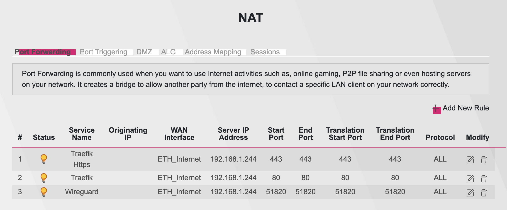

Home Assistant in Docker hosts mode with Traefik 2 and Let’s Encrypt
tech
Just adding some image to look beautiful

My setup
- House type: Three story building
- Gateway: ConBee II (Zigbee)
- Sensors:
- Aqara door sensors, motion sensors and magic cubes
- Ikea plugs and a Zigbee repeater
- Server: Raspberry Pi 4 (Conbee II plugged in USB port)
- Location: Ground floor electrical closet
- Software Stack Config
- Runtime: Everything on a docker compose file
- DuckDNS: Running in Docker, gave me
myusername.duckdns.org - Own subdomain: On Namecheap I created CNAME record for
ha.mydomain.compointingmyusername.duckdns.org. - Router Settings:
- NAT Port Forwarding to my RPi4 (see the image)
- Traefik Config:
- Running in Docker, port 80 and 443
- Proxying the traffic to Home Assistant instance
- Checkout config in docker compose for both
traefikandhome-assistant - For Let’s Encrypt, I didn’t do anything, used
tlschallenge - Now I can access
https://ha.mydomain.com

version: '3.3'
services:
traefik:
container_name: traefik
image: traefik:latest
command:
- "--log.level=DEBUG"
- "--api.insecure=true"
- "--providers.docker=true"
- "--providers.docker.exposedbydefault=false"
- "--entrypoints.web.address=:80"
- "--entrypoints.websecure.address=:443"
- "--certificatesresolvers.le.acme.tlschallenge=true"
ports:
- 80:80
- 8080:8080
- 443:443
volumes:
- /var/run/docker.sock:/var/run/docker.sock:ro
network_mode: "host"
restart: unless-stopped
# To save sdcard:
# sudo nano /etc/fstab and add
# tmpfs /tmp tmpfs defaults,noatime 0 0
# tmpfs /var/log tmpfs defaults,noatime,nosuid,mode=0755,size=100m 0 0
home-assistant:
container_name: "home-assistant"
image: homeassistant/home-assistant:latest
devices:
- /dev/ttyAMA0
healthcheck:
test: ["CMD", "curl", "-f", "http://192.168.1.244:8123"] # 192.168.1.244 is my HA ip
interval: 30s
timeout: 10s
retries: 6
environment:
- TZ=Europe/Amsterdam
ports:
- 8123:8123
privileged: true
volumes:
- ./ha:/config
cap_add:
- NET_ADMIN
- NET_BIND_SERVICE
- SYS_ADMIN
network_mode: "host"
labels:
- "traefik.enable=true"
- "traefik.http.services.home-assistant.loadbalancer.server.port=8123"
- "traefik.http.routers.home-assistant.rule=Host(`ha.mydomain.com`)"
- "traefik.http.routers.home-assistant.entrypoints=websecure"
- "traefik.http.routers.home-assistant.tls=true"
- "traefik.http.routers.home-assistant.tls.certresolver=le"
restart: unless-stoppedLive long and prosper! 🖖